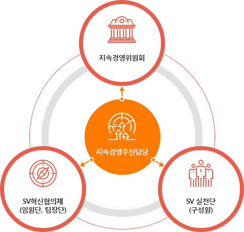
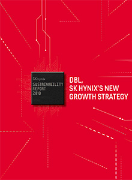
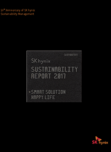

DOUBLE BOTTOM LINE
DBL
DBL이란
더블 바텀 라인(DBL, Double Bottom Line)은 경제적 가치(EV, Economic Value)와 사회적 가치(SV, Social Value)를 통합적으로 고려하는 가치 체계입니다. 사회적 가치는 기업의 경영활동이 ‘사회문제’ 해결에 기여한 기업 경영활동의 사회성과 총합을 의미합니다. 여기서 사회문제란 이 사회에 속한 구성원 다수가 개인의 노력으로 해결이 불가능한 구조적인 문제로 고통받는 상태로 정의하였으며, 기업 경영활동 과정중에 창출하는 사회적 가치는 “비즈니스 사회성과”, “사회공헌 사회성과”, 국민경제 기여 사회성과”로 분류하였습니다.
비즈니스 사회성과
기업의 생산과정과 그 결과인 제품/서비스를 통해 창출되는 사회성과
사회공헌 사회성과
기업에서 수행하는 사회공헌 활동을 통해 창출되는 사회성과
국민경제 기여 사회성과
임금, 세금, 배당/이자 등 기업의 경제활동 과정 중 구성원/이해관계자들에게 경제자원 이전을 통해 창출되는 사회성과
사회적 가치 추진 체계
SK하이닉스는 사회적 가치 추구를 경영시스템에 내재화하기 위해 추진체계를 강화하였습니다. DBL을 경영전략에 통합해 운영할 수 있도록 최고의사 결정 기구인 이사회 내에
지속경영위원회를 설치했으며, 사회적 가치 창출 기획 및 지원활동을 전담하기 위한 임원급 조직인 지속경영추진담당을 신설하였습니다. 보다 실질적으로 활동을 추진하기 위해 전사 SV 혁신협의체 및 SV 실천단을 조직해 전사 차원의 SV 아이템 발굴 및 추진체계를 구축하였습니다.

SK하이닉스의 약속
SK하이닉스는 DBL의 경영이념이 혁신과 성장의 중요한 키워드임을 확신하고 있습니다. SK하이닉스는 이러한 변화에 발맞춰 SK하이닉스의 혁신과 성장의 과정에서 사회적 가치와 경제적 가치의 균형있는 성장을 추구하여 사회와 함께 동반성장하는 기업이 되기 위해 노력해 나가겠습니다.
주요 UN SDGs 매핑
| UN SDGs | SK하이닉스 주요 활동 |
|---|---|
|
3
GOOD HEALTH
AND WELL-BEING |
|
|
4
QUALITY
EDUCATION |
|
|
7
AFFORDABLE AND
CLEAN ENERGY |
|
|
8
DECENT WORK AND
ECONOMIC GROWTH |
|
|
10
REDUCED
INEQUALITIES |
|
|
12
RESPONSIBLE
CONSUMPTION AND PRODUCTION |
|
|
13
CLIMATE
ACTION |
|
|
16
PEACE, JUSTICE
AND STRONG INSTITUTIONS |
|
지속경영보고서
2018
DBL, SK hynix's NEW GROWTH STRATEGY
올해로 열한번째 발간하는
지속경영보고서는 더블 바텀 라인(DBL, Double Bottem Line)을 기반으로 경제적 가치(EV, Economic Value)와 사회적 가치(SV, Social Vaule)의 균형있는 조화를 추구한 성과를 담고있습니다.
지속경영보고서는 더블 바텀 라인(DBL, Double Bottem Line)을 기반으로 경제적 가치(EV, Economic Value)와 사회적 가치(SV, Social Vaule)의 균형있는 조화를 추구한 성과를 담고있습니다.

2017
Smart Solution, Happy Life
올해로 10번째 발간하는 지속경영보고서를 통해 자사의 지속경영을 소개드리게 되어 기쁩니다. 특히 이번 보고서에는 자사의 '16년 지속경영 성과 뿐 아니라 지난 10년간의 발자취와 앞으로 나아갈 방향성을 함께 담았습니다. SK하이닉스는 기업의 경제, 사회 및 환경에 대한 책임과 역할을
성실히 수행할 것을 약속드립니다.

SHORTCUTS

2091, Gyeongchung-daero, Bubal-eup, Icheon-si, Gyeonggi-do, Korea T. 82-31-630-4114 F. 82-31-645-8000
COPYRIGHT © 2015 SK HYNIX INC. ALL RIGHTS RESERVED.